Small action, BIG DIFFERENCE

지속 가능한 배터리 재활용을 위한
화학소재 및 친환경 차세대 공정기술

COMPANY
기업소개
기업명
주식회사 코솔러스
대표자
김성현
임직원
27명
소재지
대한민국 전주, 익산, 완주, 군산
비전
사용 후 배터리 핵심광물 회수를 위한 혁신 화학소재와 친환경 공정 기술을 통해, 인류의 지속가능한 미래를 선도하는 글로벌 리더로 도약
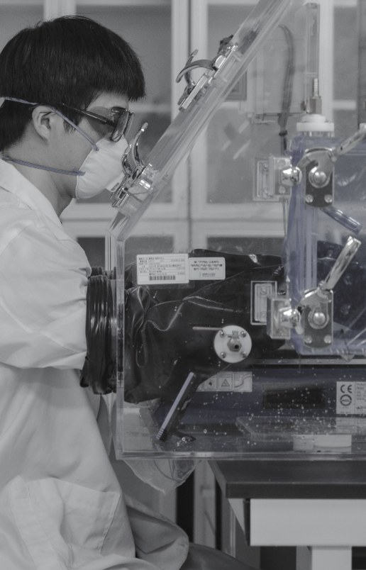
2
BACKGROUND
문제제기 – 환경 및 지정학적 요인
배터리 밸류체인 전반의 환경부하 및 사회적 비용 · 채굴 산업의 노동 및 인권문제
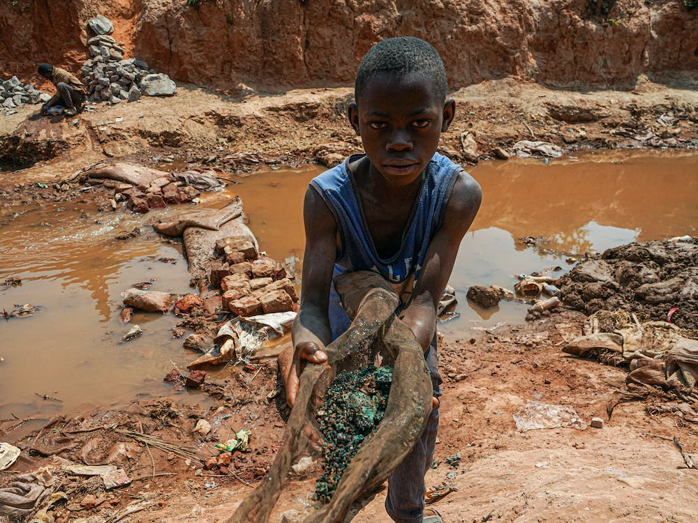

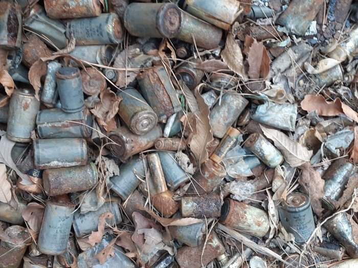
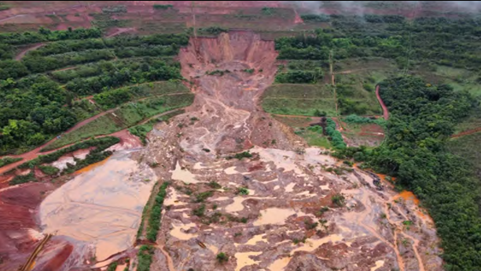
니켈 1톤당 133톤
폐기물 발생
광산채굴 기준 수요-공급 미스매치 발생
데이터 확보 예정
글로벌 양극재(리튬) 수요-공급 전망
중국이 장악한 글로벌 배터리 핵심광물 공급망

70%
전략광물 정제 평균 점유율
89%
글로벌 블랙매스 처리 비중
Source: IEA, Global Critical Minerals Outlook 2025; Benchmark Mineral Intelligence, China's Battery Recycling Dominance, 2025; Earthworks, Filtered Tailing in Indonesia, 2026
3
BACKGROUND
왜 지금인가 – 산업적 요인
데이터 확보 예정
글로벌 전기차 폐배터리 발생 전망
데이터 확보 예정
북미 ESS 시장 성장 전망
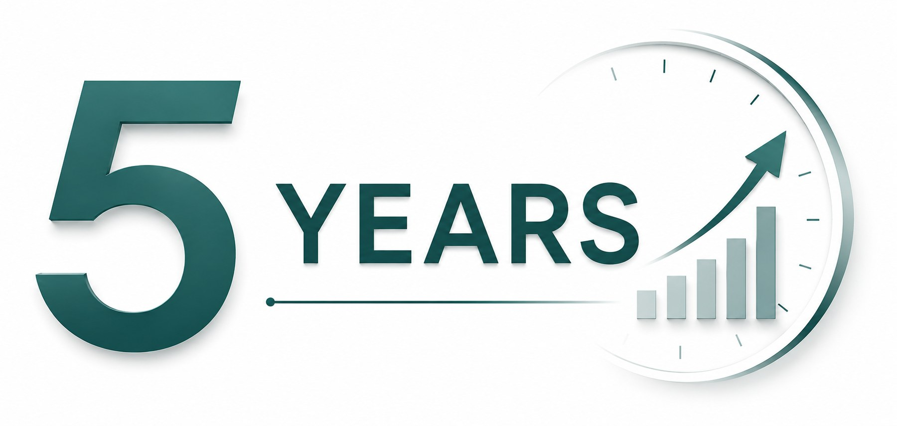
확인필요 — 지시된 사진 대신 스톡 아이콘 삽입Source: SNE Research (2023); Mirae Asset Securities Research Center (Jan. 2026); Korea Automotive Technology Institute (KATECH), Mobility Insight (Apr. 2024; citing SNE Research)
4
BACKGROUND
비즈니스 모델
환경오염 저감
유해물질 억제 및 온실가스 감축으로 환경 오염 저감
도시광산 구축
폐자원으로부터 핵심 광물 확보로 배터리 원재료 수요부족 해결
新공급망 구축
제조 → 재활용 → 제조로 이어지는 재활용 기반 新공급망 구축
5
BACKGROUND
재활용 공정 현황 (1세대)
전처리공정 → 후처리공정
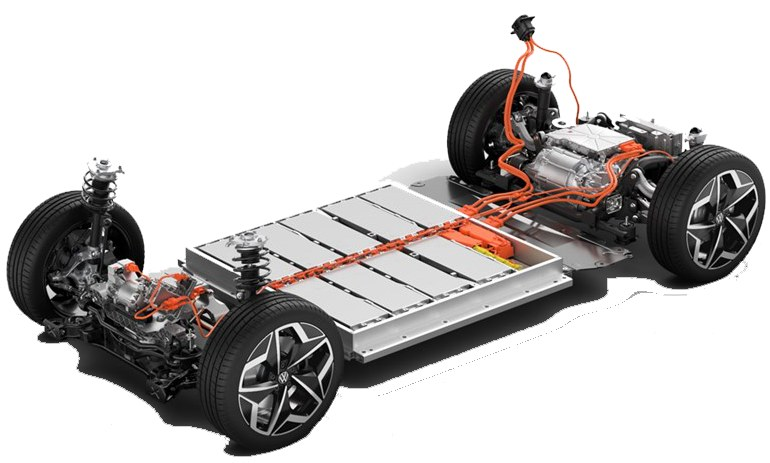
폐배터리
→
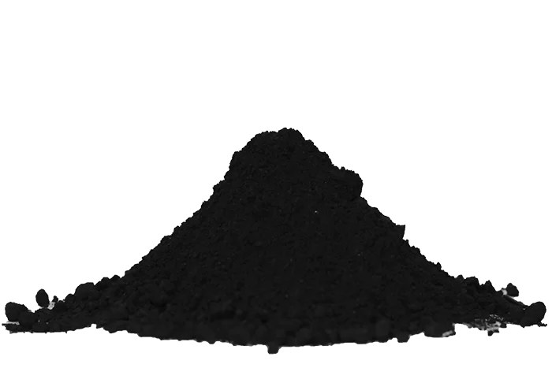
블랙매스
→
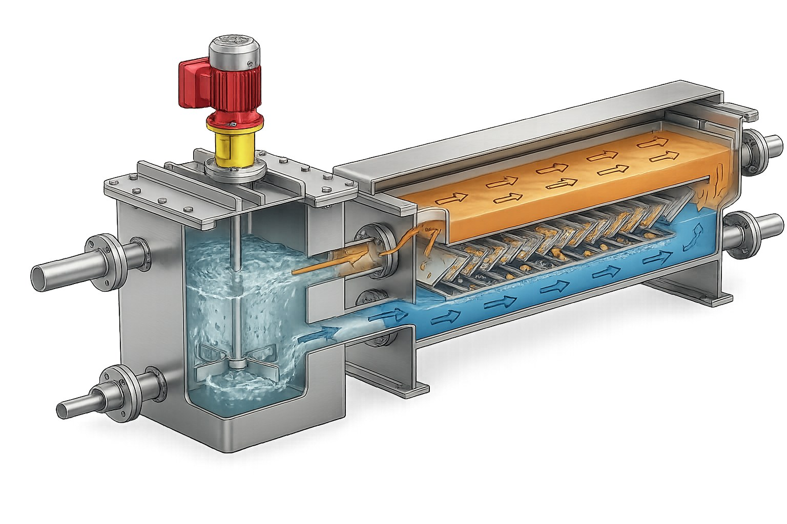
양극재 재활용공정
→
 MnSO4
MnSO4 CoSO4
CoSO4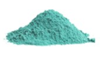
NiSO4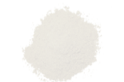
Li2CO3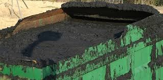
폐흑연소재의 한계
- 낮은 선택성
- 제한된 동작 환경 (pH 등)
- 상분리 불안정
- 부산물 과다발생 (망초 등)
공정의 한계
1세대 재활용 공정 경제성 확보 실패
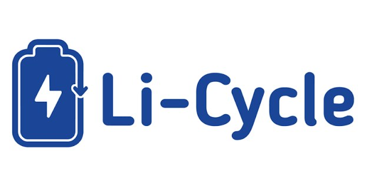
6
BACKGROUND
[솔루션1] 코솔러스 추출제(1.5세대) 개요
기존 추출제 (1세대)
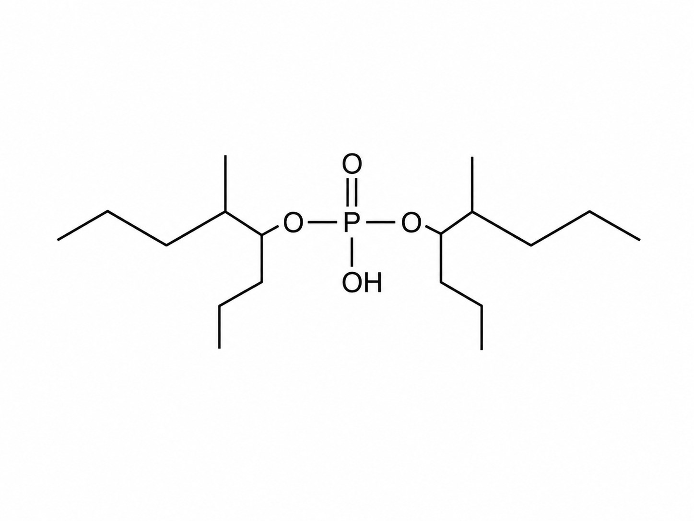
광산, 염호 기반 금속 회수용 추출제
코솔러스 추출제 (1.5세대)

재활용 효율 개선
확인필요 — 1세대 구조식과 동일 이미지
7
TECHNOLOGY
고성능 추출제 – 공정시간·첨가제 사용량 비교
비교 기준
COSOLUS
벨기에 S사
중국 K사
공정시간반응 전 → 후
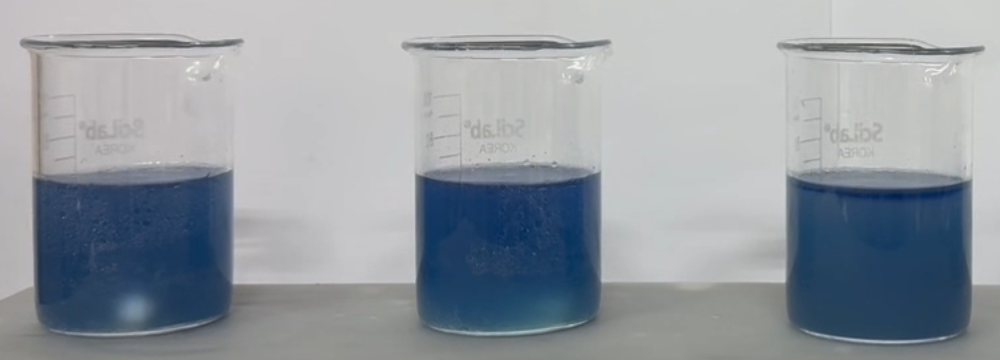
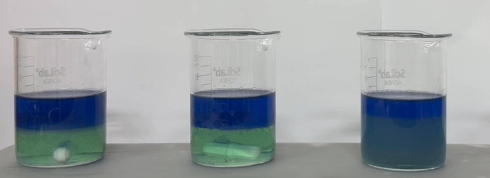
BeforeAfter
원본 이미지
확인 필요
확인 필요
원본 이미지
확인 필요
확인 필요
BeforeAfter
원본 이미지
확인 필요
확인 필요
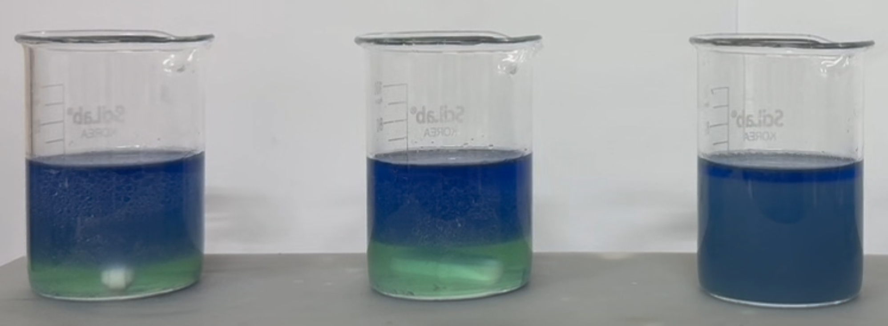
BeforeAfter
첨가제 사용량**블랙메스 1톤당
−
대비 10%↑ 필요
대비 5%↑ 필요
8
TECHNOLOGY
고성능 추출제 – 추출단수·망초 저감 효과
CAPEX 경제성 — 추출 단수 저감
OPEX 경제성 — 망초 발생 저감
기존 추출제 이론단수 : 5단
COSOLUS 추출제 이론단수 : 4단
20% 감소
대한민국 배터리 재활용 업체
1년간 니켈 16,000톤 생산 가정 시
1년간 니켈 16,000톤 생산 가정 시
4,800톤 망초 저감
(가정 시나리오 산출값 — 실존 업체 실측치 아님)
9
TECHNOLOGY
경쟁력 – 고성능 추출제 (KopperChem·Solvay 비교)
| COSOLUS | KopperChem | Solvay | |
|---|---|---|---|
| 국가 | Korea | China | Belgium |
| 제품군 | RECYION series | Mextral series | CYANEX series |
| 가격 | ◎ | ◎ | ◎ |
| 추출성능 | ◎ | ◎ | ◎ |
| 공정시간 | ◎ | ○ | △ |
| 첨가제 사용량* | ◎ | ○ | △ |
| 탄소중립 | ◎ | △ | ○ |
◎ 매우 좋음○ 좋음△ 보통
확인필요 — 가격·추출성능 3사 동일평가, 국가행 레이블-값 불일치
10
TECHNOLOGY
[솔루션1-2] DLE 기술 동향
| 흡착제 | 추출제 | 분리막 | 전기화학 | |
|---|---|---|---|---|
| 작동원리 | Li⁺(액상)과 흡착제(고상)간 선택적 상호작용 | Li⁺(액상)과 추출제(액상)간 선택적 상호작용 | Li⁺(액상)의 분리막(고상)을 통한 선택적 이동 | Li⁺(액상)과 전극(고상)간 선택적 상호작용 |
| 기술성숙도(TRL) | TRL 9 (상용화 단계) | TRL 4-5 (실험실 검증 단계) | TRL 4-5 (실험실 검증 단계) | TRL 3-4 (실험실 검증 단계) |
| 장점 | 선택성 우수, 공정 단순 | 높은 회수 효율, 재사용 가능, 기존 공정 적용 가능 | 우수한 효율, 공정 단순, 낮은 화학약품 사용량 | 우수한 효율, 낮은 화학약품 사용량 |
| 단점 | 재사용성 제한, 높은 운영비용 | 높은 운영비용 | 높은 운영비용 | 복잡한 시스템, 대규모 양산 적용에 한계 |
Source: Desalination, 2024, 575, 117249
11
TECHNOLOGY
DLE 핵심장점 – 추출제·분리막 방식
- ① 추출제-Li⁺ 액-액 접촉을 통한 빠른 물질전달
- ② 화학적 결합+공간적 분리를 통한 우수한 재활용 효율
- ③ 액상 공정을 통한 용이한 연속 운전
- ④ 분리막 기반 농축을 통한 첨가제 소모량 감소
[ 흡착제 ]
[ 전기화학 ]
[ 추출제 & 분리막 ]
평가축: 재활용효율/공정시간/연속공정/에너지효율/양산성/친환경성 (1~5점 척도) — 확인필요: 출처 인용 없는 자체 평가치로 추정
12
TECHNOLOGY
COSOLUS DLE 정량 성과
핵심소재 기술
재자원화율
3% → 50%
Source: KOMIS; Green Chem., 2026, 28, 1144
분리막 & THz 기술
리튬 재자원화율
3% → 90%
Source: KOMIS; Green Chem., 2026, 28, 1144
13
TECHNOLOGY
[솔루션2] 개요 – 2세대 재활용 공정기술
전기차 배터리
→
전처리공정
→
블랙매스
→
부유선별
양극재용 블랙매스
→
건식환원
→
재활용 양극재
MnSO4·NiSO4·CoSO4·Li2CO3
음극재용 블랙매스
→
유도가열
→
폐흑연 / 고순도 정제흑연
경제성 · 친환경성 · 양산성 확보 확인필요 — 원본 도식 내 세부 내용 미기재
14
TECHNOLOGY
2세대 공정 개요도 – COSOLUS 고유기술
전처리 공정
→
블랙매스
→
COSOLUS 부유선별
양극재용 블랙매스
→
COSOLUS 건식환원
→
코발트 · 니켈 회수
음극재용 블랙매스
→
COSOLUS 유도가열
→
고순도 정제흑연
15
TECHNOLOGY
건식환원공정 (COSOLUS Originality)

양극재용 블랙매스
→

건식환원 반응
→
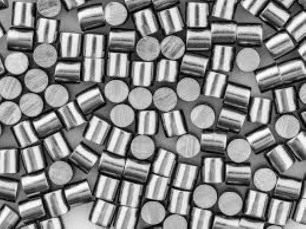
코발트 회수
>95%
Co 회수 순도
2건
PCT 특허 출원
16
TECHNOLOGY
유도가열기술 (COSOLUS Originality)
기존 소성로 (Pusher Kiln)
- 10시간 이상 장시간 소요
- 낮은 온도 정밀도
- 높은 시설 투자비용

COSOLUS 유도가열
가격경쟁력
- 짧은 공정 시간 (1분 이내, 200배 빠른 승온 속도) 확인필요
- 적은 에너지 투입 (432 Wh/kg, 64% 에너지 절감) 확인필요
기술경쟁력
- 고순도 재생흑연 (순도 99% 이상), 균일한 온도 분포, 낮은 부반응 발생 · PCT 2건 출원 확인필요

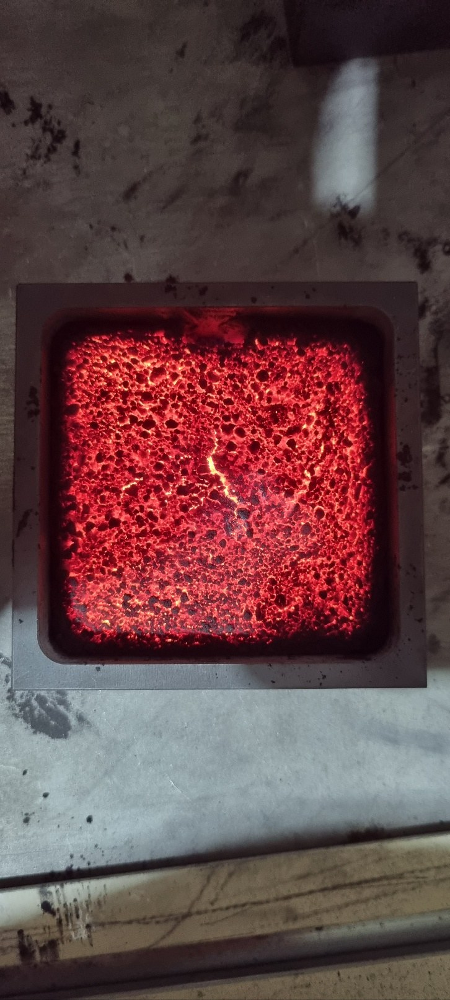
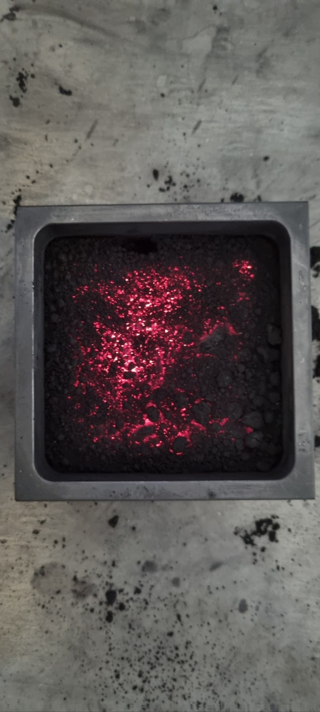
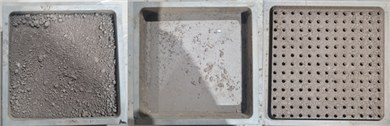
17
TECHNOLOGY
경쟁력 – 2세대 공정기술 (BTR·Vianode 비교)
| 기업명 | | BTR | Vianode |
|---|---|---|---|
| 국가 | Korea | China | Norway |
| 기술 | 유도가열 (약 950℃) | 전기로 (3,000℃) | 대류가열 (3,000℃) |
| 처리시간 | 1분 이내 | 약 24시간 | 약 48시간 |
| 특징 | 낮은 에너지 소비량 · 연속 공정 · 직접 가열 | 높은 에너지 소비량 · 비연속 공정 · 간접 가열 | 보통 수준 에너지 소비량 · 비연속 공정 · 간접 가열 |
18
COMPANY
조직구성
CEO
김성현
화학공정기술
- ▪ 서울대 응용화학부 박사 · 원광대 교수 → 2020.07~ CEO
- ▪ 논문 71편 · 특허 24편
기업부설연구소

CTO
장재규
유기합성
- ▪ 서울대 화학부 박사 → 2020.07~ CTO
- ▪ 논문 18편 · 특허 2편
AI혁신팀
CSO
민사훈
분자시뮬레이션
- ▪ 서울대 화학생물공학부 박사 → 2024.02~ CSO
- ▪ 논문 25편 · 특허 5편
기술영업팀
COO
오성환
기술영업
- ▪ 악조노벨(SSCP) 영업매니저 → 2023.11~ COO
개발1팀 (6명)
재활용 소재 · 공동개발 임춘우 교수
개발2팀 (4명)
플라스틱 첨가제 · 공동개발 김양배 교수
개발3팀 (3명)
재활용 공정기술
AI혁신팀 (4명)
AI 기반 차세대 배터리 재활용 공정기술
경영지원 · 기술영업 · 생산1팀
경영지원(2명) · 생산1팀(1명, 장세건 이사 공동개발)
19
EXECUTIVE SUMMARY
투자포인트
기술력 및 사업화
기술력
- 추출제 최상위 수준의 합성 및 정제 기술
- 친환경 공정 기술 (건식환원 및 유도가열 기술)
- Closed-loop system 합성/공정 기술로 환경부담 최소화
사업화 방향
- (1.5세대-RECYION Series) 현장적용을 고려한 PoC 진행 중 파트너사명 확인필요
- (2세대-친환경 공정기술) 신공급망 구축, 일본·인도네시아 시장 진출 파트너사명 확인필요
예상 소요자금 (투자금 및 대출)
투자라운드
80억원
Series A2 목표 투자유치 금액
투자금 사용 계획
- 글로벌 진출을 위한 국외법인 설립 및 운영
- 공장 건설을 위한 토지 구매 및 건축 비용
- 추출제 CAPA, 공정 파일롯
20
MILESTONE
세계시장 진출
5억 명+
일본·인도네시아를 전략적 거점으로 아시아 경제권에서 성장
- 인도네시아 전기자전거 업체 1대주주와 투자논의 중
- 일본 현지투자사, 재료업체 등과 투자논의 중
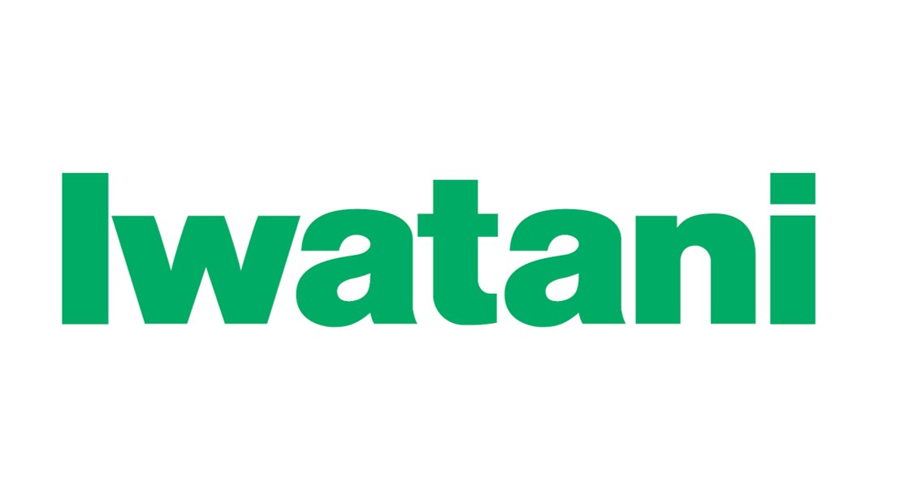
'26
일본 및 인도네시아 배터리 재활용 관련 파트너쉽 구축
'27~28
추출제 및 공정기술 PoC 획득
'29~
추출제 판매 및 공정 서비스 제공
21
코솔러스는 책임있는 화학기술을 기반으로 순환경제를 선도하고 탄소배출 저감에 기여하며 지속가능한 미래를 만들어가는 글로벌 기업으로 도약하고자 합니다.
Thank You